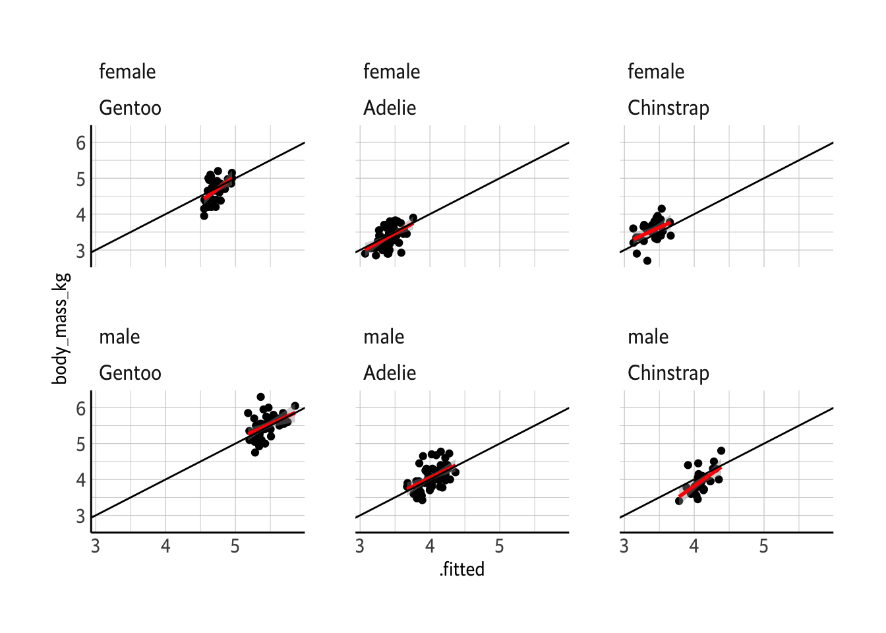

suppressPackageStartupMessages({
library(tidyverse)
library(tidymodels)
library(hrbrthemes)
})
theme_set(theme_ipsum_es(axis_title_size = 11 , axis_title_just = "c") + theme(axis.line = element_line(color ="black")))Linear Regression Application
CE 475
Packages
Load necessary packages
The data
penguins_rawdata <- palmerpenguins::penguins
penguins_rawdata# A tibble: 344 × 8
species island bill_length_mm bill_depth_mm flipper_length_mm body_mass_g
<fct> <fct> <dbl> <dbl> <int> <int>
1 Adelie Torgersen 39.1 18.7 181 3750
2 Adelie Torgersen 39.5 17.4 186 3800
3 Adelie Torgersen 40.3 18 195 3250
4 Adelie Torgersen NA NA NA NA
5 Adelie Torgersen 36.7 19.3 193 3450
6 Adelie Torgersen 39.3 20.6 190 3650
7 Adelie Torgersen 38.9 17.8 181 3625
8 Adelie Torgersen 39.2 19.6 195 4675
9 Adelie Torgersen 34.1 18.1 193 3475
10 Adelie Torgersen 42 20.2 190 4250
# ℹ 334 more rows
# ℹ 2 more variables: sex <fct>, year <int>The data contains size measurements for three penguin species that lives on three islands.

The distribution of the penguins is as follows:
penguins_rawdata %>%
na.omit() %>%
count(species, island)# A tibble: 5 × 3
species island n
<fct> <fct> <int>
1 Adelie Biscoe 44
2 Adelie Dream 55
3 Adelie Torgersen 47
4 Chinstrap Dream 68
5 Gentoo Biscoe 119Since Adelie is the only one that lives on 3 of the islands we hesitate to use island variable in our model, but we can’t be sure. We’ll do a further analysis about this.
Data Cleaning
- removing NA values
- transforming
body_mass_gtobody_mass_kg - assigning results to a new data frame
penguins_rawdata %>%
na.omit() %>%
mutate(body_mass_kg = body_mass_g / 1000) %>%
select(-body_mass_g) -> penguins
penguins# A tibble: 333 × 8
species island bill_length_mm bill_depth_mm flipper_length_mm sex year
<fct> <fct> <dbl> <dbl> <int> <fct> <int>
1 Adelie Torgersen 39.1 18.7 181 male 2007
2 Adelie Torgersen 39.5 17.4 186 female 2007
3 Adelie Torgersen 40.3 18 195 female 2007
4 Adelie Torgersen 36.7 19.3 193 female 2007
5 Adelie Torgersen 39.3 20.6 190 male 2007
6 Adelie Torgersen 38.9 17.8 181 female 2007
7 Adelie Torgersen 39.2 19.6 195 male 2007
8 Adelie Torgersen 41.1 17.6 182 female 2007
9 Adelie Torgersen 38.6 21.2 191 male 2007
10 Adelie Torgersen 34.6 21.1 198 male 2007
# ℹ 323 more rows
# ℹ 1 more variable: body_mass_kg <dbl>Split the Data
set.seed(25112023)
penguins_split <- penguins %>% initial_split()
penguins_split<Training/Testing/Total>
<249/84/333>Extract the training and test data;
penguins_training <- training(penguins_split)
penguins_training# A tibble: 249 × 8
species island bill_length_mm bill_depth_mm flipper_length_mm sex year
<fct> <fct> <dbl> <dbl> <int> <fct> <int>
1 Adelie Biscoe 41.1 18.2 192 male 2008
2 Adelie Torgers… 34.6 21.1 198 male 2007
3 Gentoo Biscoe 53.4 15.8 219 male 2009
4 Adelie Biscoe 42.7 18.3 196 male 2009
5 Chinstrap Dream 49.8 17.3 198 fema… 2009
6 Gentoo Biscoe 45.5 14.5 212 fema… 2009
7 Adelie Dream 39 18.7 185 male 2009
8 Gentoo Biscoe 43.6 13.9 217 fema… 2008
9 Adelie Dream 36 17.8 195 fema… 2009
10 Adelie Torgers… 35.5 17.5 190 fema… 2008
# ℹ 239 more rows
# ℹ 1 more variable: body_mass_kg <dbl>penguins_testing <- testing(penguins_split)
penguins_testing# A tibble: 84 × 8
species island bill_length_mm bill_depth_mm flipper_length_mm sex year
<fct> <fct> <dbl> <dbl> <int> <fct> <int>
1 Adelie Torgersen 40.3 18 195 female 2007
2 Adelie Torgersen 39.3 20.6 190 male 2007
3 Adelie Torgersen 42.5 20.7 197 male 2007
4 Adelie Torgersen 34.4 18.4 184 female 2007
5 Adelie Biscoe 40.5 17.9 187 female 2007
6 Adelie Dream 40.9 18.9 184 male 2007
7 Adelie Dream 38.8 20 190 male 2007
8 Adelie Dream 36.5 18 182 female 2007
9 Adelie Dream 36 18.5 186 female 2007
10 Adelie Dream 39.6 18.8 190 male 2007
# ℹ 74 more rows
# ℹ 1 more variable: body_mass_kg <dbl>Our model
Our aim is to predict the body mass values of penguins. First we check out the correlation between numeric variables.
penguins_training %>% select(where(is.numeric)) %>% cor() bill_length_mm bill_depth_mm flipper_length_mm year
bill_length_mm 1.0000000 -0.16867443 0.6355054 0.02054490
bill_depth_mm -0.1686744 1.00000000 -0.5556389 -0.05960619
flipper_length_mm 0.6355054 -0.55563894 1.0000000 0.17326138
year 0.0205449 -0.05960619 0.1732614 1.00000000
body_mass_kg 0.5750427 -0.43001181 0.8605754 0.02176427
body_mass_kg
bill_length_mm 0.57504266
bill_depth_mm -0.43001181
flipper_length_mm 0.86057543
year 0.02176427
body_mass_kg 1.00000000There seems like a correlation between body_mass_g and all the numeric variables expect year which we cannot consider a numeric variable.
We now need to decide which variables to use.
leaps::regsubsets(
body_mass_kg ~ ., data = penguins_training, nvmax = NULL, method = "exhaustive", force.in = NULL, force.out = "year"
) -> best_subset
best_subsetSubset selection object
Call: regsubsets.formula(body_mass_kg ~ ., data = penguins_training,
nvmax = NULL, method = "exhaustive", force.in = NULL, force.out = "year")
9 Variables (and intercept)
Forced in Forced out
speciesAdelie FALSE FALSE
speciesChinstrap FALSE FALSE
islandDream FALSE FALSE
islandTorgersen FALSE FALSE
bill_length_mm FALSE FALSE
bill_depth_mm FALSE FALSE
flipper_length_mm FALSE FALSE
sexmale FALSE FALSE
year FALSE TRUE
1 subsets of each size up to 9
Selection Algorithm: exhaustivebest_subset %>%
summary() -> best_subset_summary
best_subset_summary$adjr2[1] 0.7395398 0.7927699 0.8346512 0.8561028 0.8647157 0.8679239 0.8675853
[8] 0.8670709best_subset_summary$adjr2 %>% which.max() -> best_mod_n
best_mod_n[1] 6best_subset_summary$which[best_mod_n,] (Intercept) speciesAdelie speciesChinstrap islandDream
TRUE TRUE TRUE FALSE
islandTorgersen bill_length_mm bill_depth_mm flipper_length_mm
FALSE TRUE TRUE TRUE
sexmale year
TRUE FALSE Variable island is not on the best model so we are not going to include it to our model formula. Now we can define our recipe :
penguins_training %>%
recipe(body_mass_kg ~ flipper_length_mm + bill_length_mm + bill_depth_mm+ species + sex) %>%
step_dummy(species) %>%
step_dummy(sex) -> penguins_recipe
penguins_recipe── Recipe ──────────────────────────────────────────────────────────────────────── Inputs Number of variables by roleoutcome: 1
predictor: 5── Operations • Dummy variables from: species• Dummy variables from: sexNow we tell R that we are going to use linear model and do a regression. Define the Linear Model Specs
linear_reg() %>%
set_engine("lm") %>%
set_mode("regression") -> lm_spec
lm_specLinear Regression Model Specification (regression)
Computational engine: lm Then we define our Workflow
workflow() %>%
add_model(lm_spec) %>%
add_recipe(penguins_recipe) -> penguins_workflow
penguins_workflow══ Workflow ════════════════════════════════════════════════════════════════════
Preprocessor: Recipe
Model: linear_reg()
── Preprocessor ────────────────────────────────────────────────────────────────
2 Recipe Steps
• step_dummy()
• step_dummy()
── Model ───────────────────────────────────────────────────────────────────────
Linear Regression Model Specification (regression)
Computational engine: lm Fit the Model
Now we fit our model to the training data.
penguins_workflow %>%
fit(data = penguins_training)══ Workflow [trained] ══════════════════════════════════════════════════════════
Preprocessor: Recipe
Model: linear_reg()
── Preprocessor ────────────────────────────────────────────────────────────────
2 Recipe Steps
• step_dummy()
• step_dummy()
── Model ───────────────────────────────────────────────────────────────────────
Call:
stats::lm(formula = ..y ~ ., data = data)
Coefficients:
(Intercept) flipper_length_mm bill_length_mm bill_depth_mm
-0.48514 0.01476 0.02097 0.07828
species_Adelie species_Chinstrap sex_male
-1.02378 -1.30278 0.36468 We now have the coefficients of each variable. To get more information we can summarise the model:
penguins_workflow %>%
fit(data = penguins_training) %>%
extract_fit_engine() %>%
summary()
Call:
stats::lm(formula = ..y ~ ., data = data)
Residuals:
Min 1Q Median 3Q Max
-0.66547 -0.17076 -0.01046 0.17987 0.93694
Coefficients:
Estimate Std. Error t value Pr(>|t|)
(Intercept) -0.485144 0.696529 -0.697 0.486773
flipper_length_mm 0.014759 0.003261 4.525 9.45e-06 ***
bill_length_mm 0.020973 0.007983 2.627 0.009157 **
bill_depth_mm 0.078276 0.021951 3.566 0.000437 ***
species_Adelie -1.023783 0.148582 -6.890 4.79e-11 ***
species_Chinstrap -1.302781 0.123746 -10.528 < 2e-16 ***
sex_male 0.364682 0.054548 6.686 1.58e-10 ***
---
Signif. codes: 0 '***' 0.001 '**' 0.01 '*' 0.05 '.' 0.1 ' ' 1
Residual standard error: 0.2849 on 242 degrees of freedom
Multiple R-squared: 0.8711, Adjusted R-squared: 0.8679
F-statistic: 272.6 on 6 and 242 DF, p-value: < 2.2e-16To see the root mean squared error we use rmse function
penguins_workflow %>%
fit(data = penguins_training) %>%
extract_fit_engine() %>%
augment(data = penguins_training) %>%
rmse(truth = body_mass_kg, estimate = .fitted)# A tibble: 1 × 3
.metric .estimator .estimate
<chr> <chr> <dbl>
1 rmse standard 0.281To see the actual values of dependent varaible and our estimation together we use augment function and select the two
penguins_workflow %>%
fit(data = penguins_training) %>%
extract_fit_engine() %>%
augment(data = penguins_training) %>%
select(body_mass_kg, .fitted)# A tibble: 249 × 2
body_mass_kg .fitted
<dbl> <dbl>
1 4.05 3.98
2 4.4 4.16
3 5.5 5.47
4 4.08 4.08
5 3.68 3.53
6 4.75 4.73
7 3.65 3.87
8 4.9 4.72
9 3.45 3.52
10 3.7 3.41
# ℹ 239 more rowspenguins_workflow %>%
fit(data = penguins_training) %>%
extract_fit_engine() %>%
augment( data = penguins_training) %>%
ggplot() + aes(x = .fitted, y = body_mass_kg) +geom_point() +
geom_smooth(method = "lm", color = "red") + facet_wrap(sex~species, scales = "fixed") + geom_abline(slope =1, intercept = 0)`geom_smooth()` using formula = 'y ~ x'
penguins_workflow %>%
fit(data = penguins_training) %>%
extract_fit_engine() %>%
augment( data = penguins_training) %>%
ggplot() + aes(x = .fitted, y = body_mass_kg) +#geom_point() +
geom_smooth(method = "lm", color = "red") + facet_wrap(sex~species, scales = "fixed") + geom_abline(slope =1, intercept = 0)`geom_smooth()` using formula = 'y ~ x'
accuracy in testing data
Now we get the rmse and rsq of testing data fit
penguins_workflow %>%
last_fit(penguins_split) %>%
collect_metrics()# A tibble: 2 × 4
.metric .estimator .estimate .config
<chr> <chr> <dbl> <chr>
1 rmse standard 0.298 Preprocessor1_Model1
2 rsq standard 0.886 Preprocessor1_Model1We see that they are very close to training data, which is what we were looking for.
penguins_workflow %>%
last_fit(penguins_split) %>%
collect_predictions() %>%
ggplot() + aes(x = .pred, y = body_mass_kg) +geom_point() +
geom_smooth(method = "lm", color = "red") + geom_abline(slope =1, intercept = 0)`geom_smooth()` using formula = 'y ~ x'penguins_workflow %>%
last_fit(penguins_split) %>%
collect_predictions() %>%
bind_cols(sex = penguins_testing$sex, species = penguins_testing$species) %>%
ggplot() + aes(x = .pred, y = body_mass_kg) +#geom_point() +
geom_smooth(method = "lm", color = "red") + facet_wrap(sex~species, scales = "fixed") + geom_abline(slope =1, intercept = 0)`geom_smooth()` using formula = 'y ~ x'